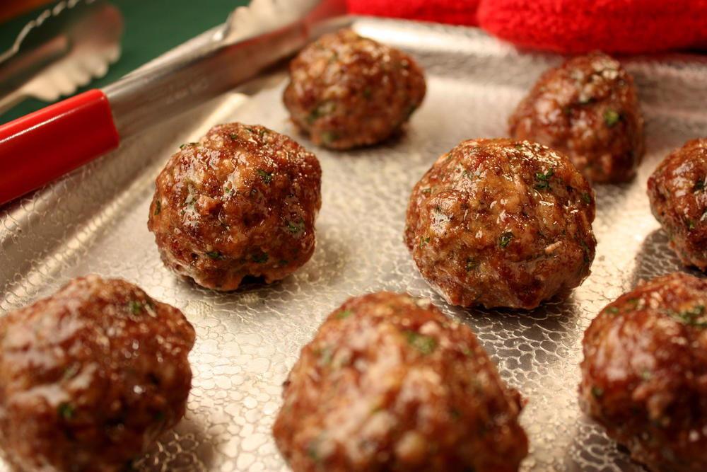

Italian Meatballs

These easy oven-baked Italian meatballs are incredibly tender and juicy with irresistible flavors that will have you craving for more.
Made with ground beef, onion, garlic, parmesan cheese, and parsley,
these meatballs are seasoned to perfection and ready to be served in just 30 minutes!
Ingredients
- 1/2 cup italian bread crumbs
- 2/3 cup milk
- 1 lb ground beef
- 1/4 medium onion finely diced or grated
- 2 cloves garlic minced
- 1 Large egg beaten
- 1 tsp salt or to tast
- 1/2 tsp black pepper
- 1/4 cup parmesan cheese preferably Parmigian-Reggiano
- 1 tbsp fresh parsley or 1 tsp dried parsley
Steps
- Preheat the oven to 400°F (200°C) and line a baking sheet
with parchment paper or a baking mat.
- In a large mixing bowl, add Italian bread crumbs and milk. Combine well and set aside while preparing the other ingredients,
for at least 5 minutes.
- Add ground beef, onion, garlic, egg, salt, black pepper, parmesan cheese, and parsley to the breadcrumb mixture,
and mix with your hands until just combined. Do not overmix.
- Portion onto the prepared baking sheet (using a cookie or ice cream scoop will make it easier).
Wet your hands with water, and roll meatballs into 2" diameter balls.
- Bake for about 18-20 minutes, or until the meatballs have reached an internal temperature of 165˚F (74°C).
Remove from oven and drain off any excess fat. Serve with your favorite sauce and enjoy!